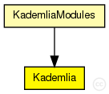
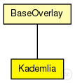

This documentation is released under the Creative Commons license
This documentation is released under the Creative Commons licenseThe main module of the Kademlia implementation
Author: Sebastian Mies, Ingmar Baumgart, Bernhard Heep
The following diagram shows usage relationships between types. Unresolved types are missing from the diagram. Click here to see the full picture.
The following diagram shows inheritance relationships for this type. Unresolved types are missing from the diagram. Click here to see the full picture.
| BaseOverlay (simple module) |
Base class for overlay implementations |
If a module type shows up more than once, that means it has been defined in more than one NED file.
| KademliaModules (compound module) |
Implementation of the Kademlia DHT overlay as described in "Kademlia: A peer-to-peer information system based on the XOR metric" by P. Maymounkov and D. Mazieres, published in "In Proceedings of IPTPS02" |
| Name | Type | Default value | Description |
|---|---|---|---|
| rpcUdpTimeout | double |
default timeout value for direct RPCs |
|
| rpcKeyTimeout | double |
default timeout value for routed RPCs |
|
| optimizeTimeouts | bool |
calculate timeouts from measured RTTs and network coordinates |
|
| rpcExponentialBackoff | bool |
if true, doubles the timeout for every retransmission |
|
| localPort | int |
UDP port for overlay messages |
|
| debugOutput | bool |
enable debug output |
|
| keyLength | int |
overlay key length in bits |
|
| nodeId | string |
optional nodeId as string in hexadecimal notation |
|
| useCommonAPIforward | bool |
enable CommonAPI forward() calls |
|
| drawOverlayTopology | bool |
draw arrow to successor node? |
|
| hopCountMax | int |
maximum number of overlay hops |
|
| recNumRedundantNodes | int |
numRedundantNodes for recursive routing |
|
| joinOnApplicationRequest | bool |
only join the overlay on application request |
|
| collectPerHopDelay | bool |
delay statistics for single hops |
|
| routeMsgAcks | bool |
use RPCs for route messages |
|
| lookupRedundantNodes | int |
number of next hops in each step |
|
| lookupParallelPaths | int |
number of parallel paths |
|
| lookupParallelRpcs | int |
number of nodes to ask in parallel |
|
| lookupVerifySiblings | bool |
true, if siblings need to be authenticated with a ping |
|
| lookupMajoritySiblings | bool |
true, if sibling candidates are selected by a majority decision if using parallel paths |
|
| lookupMerge | bool |
true, if parallel Rpc results should be merged |
|
| lookupFailedNodeRpcs | bool |
communicate failed nodes |
|
| lookupStrictParallelRpcs | bool |
limited the number of concurrent rpcs to parameter parallelRpcs |
|
| lookupUseAllParallelResponses | bool |
merge all parallel responses from earlier steps |
|
| lookupNewRpcOnEveryTimeout | bool |
send a new RPC immediately after an RPC timeouts |
|
| lookupNewRpcOnEveryResponse | bool |
send a new RPC after every response, even if there was no progress |
|
| lookupFinishOnFirstUnchanged | bool |
finish lookup, if the last pending RPC returned without progress |
|
| lookupVisitOnlyOnce | bool |
if true, the same node is never asked twice during a single lookup |
|
| lookupAcceptLateSiblings | bool |
if true, a FindNodeResponse with sibling flag set is always accepted, even if it is from a previous lookup step |
|
| routingType | string |
default routing mode (iterative, semi-recursive,...) |
|
| rejoinOnFailure | bool |
rejoin after loosing connection to the overlay? |
|
| sendRpcResponseToLastHop | bool |
needed by KBR protocols for NAT support |
|
| recordRoute | bool |
record visited hops on route |
|
| dropFindNodeAttack | bool |
if node is malicious, it tries a findNode attack |
|
| isSiblingAttack | bool |
if node is malicious, it tries a isSibling attack |
|
| invalidNodesAttack | bool |
if node is malicious, it tries a invalidNode attack |
|
| dropRouteMessageAttack | bool |
if node is malicious, it drops all received BaseRouteMessages |
|
| measureAuthBlock | bool |
if true, measure the overhead of signatures in rpc messages |
|
| restoreContext | bool |
if true, a node rejoins with its old nodeId and malicious state |
|
| minSiblingTableRefreshInterval | double |
siblingTable refresh delay |
|
| minBucketRefreshInterval | double |
bucket refresh delay |
|
| siblingPingInterval | double |
interval in which all siblings get pinged (0 to disable) |
|
| maxStaleCount | int |
number of timeouts before node removal |
|
| k | int |
number of paths (size of k-bucket) |
|
| b | int |
network diameter O(log_{2^(b)}) |
|
| s | int |
number of siblings |
|
| exhaustiveRefresh | bool |
if true, use exhaustive-iterative lookups to refresh buckets |
|
| pingNewSiblings | bool |
ping new unknown siblings? |
|
| secureMaintenance | bool |
if true, ping not authenticated nodes before adding them to a bucket |
|
| newMaintenance | bool | ||
| enableReplacementCache | bool |
enables the replacement cache to store nodes if a bucket is full |
|
| replacementCachePing | bool |
ping the least recently used node in a full bucket, when a node is added to the replacement cache |
|
| replacementCandidates | int |
maximum number of candidates in the replacement cache for each bucket |
|
| siblingRefreshNodes | int |
number of redundant nodes for exhaustive sibling table refresh lookups (0 = numRedundantNodes) |
|
| bucketRefreshNodes | int |
number of redundant nodes for exhaustive bucket refresh lookups (0 = numRedundantNodes) |
|
| activePing | bool |
R/Kademlia |
|
| proximityRouting | bool |
enable proximity routing (recursive only) |
|
| proximityNeighborSelection | bool |
enable proximity neighbor selection |
|
| altRecMode | bool |
use source-routing mode instead of direct mode |
| Name | Value | Description |
|---|---|---|
| class | Kademlia | |
| display | i=block/circle |
| Name | Direction | Size | Description |
|---|---|---|---|
| udpIn | input |
gate from the UDP layer |
|
| udpOut | output |
gate to the UDP layer |
|
| tcpIn | input |
gate from the TCP layer |
|
| tcpOut | output |
gate to the TCP layer |
|
| appIn | input |
gate from the application |
|
| appOut | output |
gate to the application |
|
| direct_in | input |
gate for sendDirect |
// // The main module of the Kademlia implementation // // @author Sebastian Mies, Ingmar Baumgart, Bernhard Heep // simple Kademlia extends BaseOverlay { parameters: @class(Kademlia); double minSiblingTableRefreshInterval @unit(s); // siblingTable refresh delay double minBucketRefreshInterval @unit(s); // bucket refresh delay double siblingPingInterval @unit(s); // interval in which all siblings get pinged (0 to disable) int maxStaleCount; // number of timeouts before node removal int k; // number of paths (size of k-bucket) int b; // network diameter O(log_{2^(b)}) int s; // number of siblings bool exhaustiveRefresh; // if true, use exhaustive-iterative lookups to refresh buckets bool pingNewSiblings; // ping new unknown siblings? bool secureMaintenance; // if true, ping not authenticated nodes before adding them to a bucket bool newMaintenance; bool enableReplacementCache; // enables the replacement cache to store nodes if a bucket is full bool replacementCachePing; // ping the least recently used node in a full bucket, when a node is added to the replacement cache int replacementCandidates; // maximum number of candidates in the replacement cache for each bucket int siblingRefreshNodes; // number of redundant nodes for exhaustive sibling table refresh lookups (0 = numRedundantNodes) int bucketRefreshNodes; // number of redundant nodes for exhaustive bucket refresh lookups (0 = numRedundantNodes) // R/Kademlia bool activePing; // ping new neighbors? bool proximityRouting; // enable proximity routing (recursive only) bool proximityNeighborSelection; // enable proximity neighbor selection bool altRecMode; // use source-routing mode instead of direct mode }
This documentation is released under the Creative Commons license